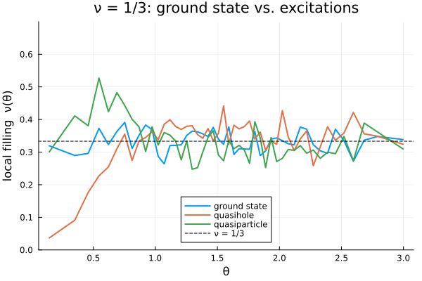

2. Quasiholes and quasiparticles
The elementary charged excitations of a Jain state are the quasihole (a local depletion of density) and the quasiparticle (a local excess). On the sphere we create one at the north pole by removing or adding a single orbital at the top of the occupied $\Lambda$-levels. The builders cf_quasihole_lm and cf_quasiparticle_lm do exactly that.
We reuse the build → thermalize → sample density recipe from tutorial 1, so here we focus on what changes.
using CFsOnSphere
using Random
using LinearAlgebra
LinearAlgebra.BLAS.set_num_threads(1)
using Plots
gr()Plots.GRBackend()A small, self-contained density sampler (same algorithm as tutorial 1).
function density_profile(Qstar, p, l_m_list; seed = 7, n_therm = 5_000, n_steps = 20_000, n_bins = 48)
N = length(l_m_list)
rng = MersenneTwister(seed)
ψ, ψ_next = Ψproj(Qstar, p, N, l_m_list), Ψproj(Qstar, p, N, l_m_list)
logpdf(ψ) = 2.0 * real(logdet(ψ.slater_det) + ψ.jastrow_factor_log)
θ, ϕ = rand_θ_ϕ_gen(rng, N)
θ_next, ϕ_next = copy(θ), copy(ϕ)
σ = π / sqrt(12)
sampling_iter, σ, _, _ = gibbs_thermalization!(rng, ψ, ψ_next, θ, ϕ, θ_next, ϕ_next, σ, logpdf, n_therm)
θmesh = acos.(LinRange(1.0, -1.0, n_bins + 1))
Agrid = 2π .* (cos.(θmesh[1:end-1]) .- cos.(θmesh[2:end]))
density = zeros(Float64, n_bins)
logpdf_current = logpdf(ψ)
for _ in 1:n_steps
i = sampling_iter
θ_next[i], ϕ_next[i] = proposal(rng, θ[i], ϕ[i], σ)
update_wavefunction!(ψ_next, θ_next[i], ϕ_next[i], i)
logpdf_next = logpdf(ψ_next)
if logpdf_next - logpdf_current >= log(rand(rng))
θ[i], ϕ[i] = θ_next[i], ϕ_next[i]; copy!(ψ, ψ_next, i); logpdf_current = logpdf_next
else
θ_next[i], ϕ_next[i] = θ[i], ϕ[i]; copy!(ψ_next, ψ, i)
end
update_density!(θmesh, θ, density)
sampling_iter = mod(sampling_iter, N) + 1
end
θc = 0.5 .* (θmesh[1:end-1] .+ θmesh[2:end])
return θc, density ./ n_steps ./ Agrid
enddensity_profile (generic function with 1 method)Three states at ν = 1/3
We compare the ground state with one quasihole and one quasiparticle. Note that the builders return different particle numbers (a quasihole removes an orbital, a quasiparticle adds one), which is the correct sphere bookkeeping.
n, p = 1, 2 # ν = n/(pn+1) = 1/3
Qgs, lm_gs = cf_ground_state_lm(7, n, p)
Qqh, lm_qh = cf_quasihole_lm(7, n, p)
Qqp, lm_qp = cf_quasiparticle_lm(7, n, p)
@show length(lm_gs) length(lm_qh) length(lm_qp);
θc_gs, n_gs = density_profile(Qgs, p, lm_gs)
θc_qh, n_qh = density_profile(Qqh, p, lm_qh)
θc_qp, n_qp = density_profile(Qqp, p, lm_qp)([0.14484349699855983, 0.3504124281597336, 0.4582491863032524, 0.5455230268706541, 0.6214748483513336, 0.689999200529466, 0.7531981483056067, 0.8123653596828639, 0.8683667322128976, 0.9218172676203794 … 2.219775385969414, 2.2732259213768957, 2.3292272939069294, 2.388394505284187, 2.4515934530603274, 2.52011780523846, 2.5960696267191388, 2.683343467286541, 2.7911802254300597, 2.9967491565912336], [0.5744856825845044, 0.7853341511926512, 0.7276563998161442, 1.0068778319765648, 0.8097803504515663, 0.9216981064337826, 0.8464496493399346, 0.7654716142947825, 0.7211628781379948, 0.5767775137650276 … 0.5666552593843862, 0.5851808947602797, 0.536288496242451, 0.5725758232674032, 0.5637904704087277, 0.6646310423517591, 0.5225375091593099, 0.7431262602846763, 0.6906051290643546, 0.5912924445750085])We plot the local filling $\nu(\theta) = 2\pi\,n(\theta)/Q_{\text{shift}}$ (each state with its own $Q_{\text{shift}} = N/2\nu$), so the bulk sits at $\nu = 1/3$. The excitations live at the north pole ($\theta = 0$): the quasihole depletes the filling there, the quasiparticle enhances it, while the ground state is flat. Showing the $y=0$ baseline keeps the dip/bump in context.
ν = 1 / 3
locfill(dens, lm) = dens .* (2π / (length(lm) / (2ν))) # local filling for a state with these orbitals
plot(xlabel="θ", ylabel="local filling ν(θ)", ylims=(0.0, 0.7),
title="ν = 1/3: ground state vs. excitations", legend=:bottom)
plot!(θc_gs, locfill(n_gs, lm_gs); lw=2, label="ground state")
plot!(θc_qh, locfill(n_qh, lm_qh); lw=2, label="quasihole")
plot!(θc_qp, locfill(n_qp, lm_qp); lw=2, label="quasiparticle")
hline!([ν]; ls=:dash, color=:black, label="ν = 1/3")
This page was generated using Literate.jl.